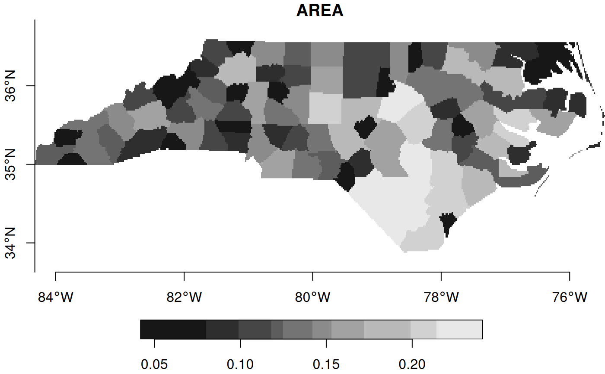
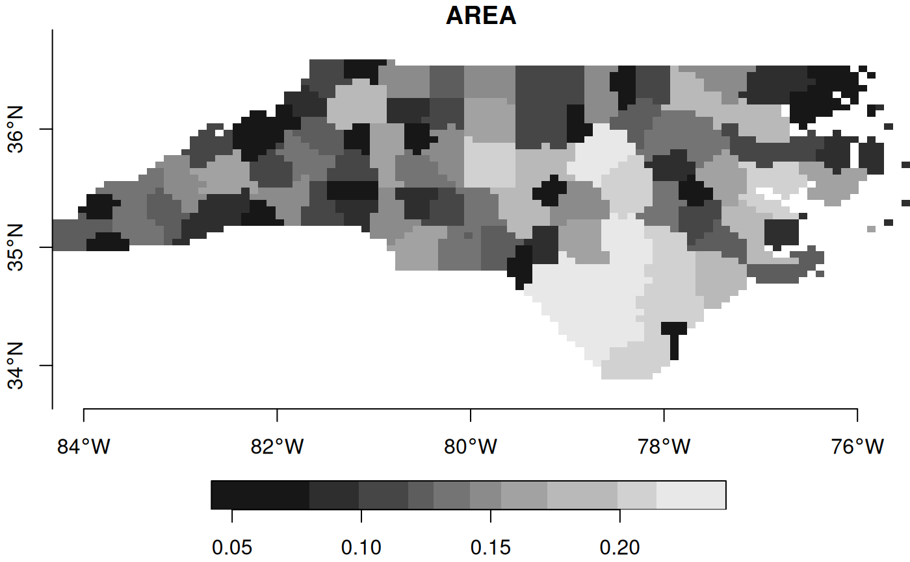

rasterize simple feature geometries
st_rasterize(
sf,
template = guess_raster(sf, ...) %||% st_as_stars(st_bbox(sf), values = NA_real_,
...),
file = tempfile(),
driver = "GTiff",
options = character(0),
align = FALSE,
proxy = FALSE,
...
)Arguments
- sf
object of class
sf- template
stars object with desired target geometry, or target geometry alignment if
align=TRUE- file
temporary file name
- driver
driver for temporary file
- options
character; options vector for
GDALRasterize- align
logical; if
TRUE,templatecontain the geometry alignment, informing target resolution and offset only.- proxy
logical; should a proxy object be returned?
- ...
arguments passed on to st_as_stars
Examples
demo(nc, echo = FALSE, ask = FALSE)
(x = st_rasterize(nc)) # default grid:
#> stars object with 2 dimensions and 12 attributes
#> attribute(s):
#> Min. 1st Qu. Median Mean 3rd Qu. Max. NA's
#> AREA 0.042 0.108 0.142 1.451932e-01 0.181 0.241 30904
#> PERIMETER 0.999 1.461 1.716 1.786110e+00 2.004 3.640 30904
#> CNTY_ 1825.000 1907.000 1989.000 1.998403e+03 2085.000 2241.000 30904
#> CNTY_ID 1825.000 1907.000 1989.000 1.998403e+03 2085.000 2241.000 30904
#> FIPSNO 37001.000 37049.000 37101.000 3.710042e+04 37153.000 37199.000 30904
#> CRESS_ID 1.000 25.000 51.000 5.071206e+01 77.000 100.000 30904
#> BIR74 248.000 1323.000 2648.000 3.791637e+03 4139.000 21588.000 30904
#> SID74 0.000 3.000 5.000 7.891985e+00 10.000 44.000 30904
#> NWBIR74 1.000 297.000 844.000 1.246210e+03 1396.000 8027.000 30904
#> BIR79 319.000 1606.000 3108.000 4.852046e+03 5400.000 30757.000 30904
#> SID79 0.000 3.000 6.000 9.584098e+00 13.000 57.000 30904
#> NWBIR79 3.000 360.000 1058.000 1.604642e+03 1524.000 11631.000 30904
#> dimension(s):
#> from to offset delta refsys point x/y
#> x 1 461 -84.3239 0.0192484 NAD27 FALSE [x]
#> y 1 141 36.5896 -0.0192484 NAD27 FALSE [y]
plot(x, axes = TRUE)

# a bit more customized grid:
(x = st_rasterize(nc, st_as_stars(st_bbox(nc), nx = 100, ny = 50, values = NA_real_)))
#> stars object with 2 dimensions and 12 attributes
#> attribute(s):
#> Min. 1st Qu. Median Mean 3rd Qu. Max. NA's
#> AREA 0.042 0.108 0.142 0.145536 0.181 0.241 2373
#> PERIMETER 0.999 1.470 1.716 1.789032 2.004 3.640 2373
#> CNTY_ 1825.000 1908.000 1989.000 1999.761325 2088.000 2241.000 2373
#> CNTY_ID 1825.000 1908.000 1989.000 1999.761325 2088.000 2241.000 2373
#> FIPSNO 37001.000 37049.000 37101.000 37100.327750 37151.000 37199.000 2373
#> CRESS_ID 1.000 25.000 51.000 50.663875 76.000 100.000 2373
#> BIR74 248.000 1323.500 2648.000 3790.530263 4139.000 21588.000 2373
#> SID74 0.000 3.000 5.000 7.905976 10.000 44.000 2373
#> NWBIR74 1.000 289.000 844.000 1246.116483 1396.000 8027.000 2373
#> BIR79 319.000 1606.000 3108.000 4848.231062 5386.000 30757.000 2373
#> SID79 0.000 3.000 6.000 9.574419 13.000 57.000 2373
#> NWBIR79 3.000 360.000 1058.000 1602.740769 1524.000 11631.000 2373
#> dimension(s):
#> from to offset delta refsys point x/y
#> x 1 100 -84.3239 0.0886687 NAD27 FALSE [x]
#> y 1 50 36.5896 -0.0541531 NAD27 FALSE [y]
plot(x, axes = TRUE)

(ls = st_sf(a = 1:2, st_sfc(st_linestring(rbind(c(0.1, 0), c(1.1, 1))),
st_linestring(rbind(c(0, 0.05), c(1, 0.05))))))
#> Simple feature collection with 2 features and 1 field
#> Geometry type: LINESTRING
#> Dimension: XY
#> Bounding box: xmin: 0 ymin: 0 xmax: 1.1 ymax: 1
#> CRS: NA
#> a
#> 1 1
#> 2 2
#> c..st_sfc.st_linestring.rbind.c.0.1..0...c.1.1..1.....st_linestring.rbind.c.0..........0.05...c.1..0.05......
#> 1 LINESTRING (0.1 0, 1.1 1)
#> 2 LINESTRING (0 0.05, 1 0.05)
(grd = st_as_stars(st_bbox(ls), nx = 10, ny = 10, xlim = c(0, 1.0), ylim = c(0, 1),
values = NA_real_))
#> stars object with 2 dimensions and 1 attribute
#> attribute(s):
#> Min. 1st Qu. Median Mean 3rd Qu. Max. NA's
#> values NA NA NA NaN NA NA 100
#> dimension(s):
#> from to offset delta x/y
#> x 1 10 0 0.1 [x]
#> y 1 10 1 -0.1 [y]
# Only the left-top corner is part of the grid cell:
sf_extSoftVersion()["GDAL"]
#> GDAL
#> "3.0.4"
plot(st_rasterize(ls, grd), axes = TRUE, reset = FALSE) # ALL_TOUCHED=FALSE;
plot(ls, add = TRUE, col = "red")
 plot(st_rasterize(ls, grd, options = "ALL_TOUCHED=TRUE"), axes = TRUE, reset = FALSE)
plot(ls, add = TRUE, col = "red")
plot(st_rasterize(ls, grd, options = "ALL_TOUCHED=TRUE"), axes = TRUE, reset = FALSE)
plot(ls, add = TRUE, col = "red")
 # add lines to existing 0 values, summing values in case of multiple lines:
(grd = st_as_stars(st_bbox(ls), nx = 10, ny = 10, xlim = c(0, 1.0), ylim = c(0, 1), values = 0))
#> stars object with 2 dimensions and 1 attribute
#> attribute(s):
#> Min. 1st Qu. Median Mean 3rd Qu. Max.
#> values 0 0 0 0 0 0
#> dimension(s):
#> from to offset delta x/y
#> x 1 10 0 0.1 [x]
#> y 1 10 1 -0.1 [y]
r = st_rasterize(ls, grd, options = c("MERGE_ALG=ADD", "ALL_TOUCHED=TRUE"))
plot(r, axes = TRUE, reset = FALSE)
plot(ls, add = TRUE, col = "red")
# add lines to existing 0 values, summing values in case of multiple lines:
(grd = st_as_stars(st_bbox(ls), nx = 10, ny = 10, xlim = c(0, 1.0), ylim = c(0, 1), values = 0))
#> stars object with 2 dimensions and 1 attribute
#> attribute(s):
#> Min. 1st Qu. Median Mean 3rd Qu. Max.
#> values 0 0 0 0 0 0
#> dimension(s):
#> from to offset delta x/y
#> x 1 10 0 0.1 [x]
#> y 1 10 1 -0.1 [y]
r = st_rasterize(ls, grd, options = c("MERGE_ALG=ADD", "ALL_TOUCHED=TRUE"))
plot(r, axes = TRUE, reset = FALSE)
plot(ls, add = TRUE, col = "red")